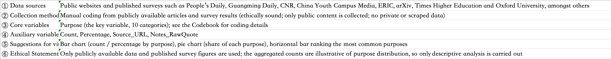

Reflective Journal: COMM5780M Digital Practices
Week 1
This week explored three theories of digital media. Technological determinism frames technology as an independent force altering society but oversimplifies social contexts and human agency. SCOT argues a technology’s success depends on social actors, investors and policies instead of its inherent features. The module adopts social‑shaping theory: technology and society mutually influence each other.
Comparing Nicholas Carr’s reading with modern generative‑AI news reveals recurring dual narratives of technological progress and cognitive risk. Digital tools embed designers’ biases, their impacts are not inevitable. I learnt module AI guidelines: AI may assist summarising learning materials yet needs fact‑checking; recording group work requires full consent.
Week 2
Three web‑building approaches were covered: CampusPress, manual HTML/CSS coding and GitHub Pages. CampusPress is Leeds’ WordPress CMS; it offers quick no‑code site building with themes but limits customisation, suitable for portfolios and reflective blogs.
I practised writing basic HTML for page structure and used CSS to adjust styling. I set up a GitHub account, created a repository and activated GitHub Pages to publish my site publicly. I understood repositories, README files and open‑source templates.
Week 3
Web scraping extracts structured data from public web pages for digital media research. Two methods were demonstrated: the no‑code WebScraper.io Chrome extension and Python scraping via Google Colab.
Using WebScraper.io, I located HTML elements, set selectors and exported data as CSV files. Importantly, scraping only captures data from webpage code and misses human qualitative context. Many platforms restrict scraping to protect content and user data.
Week 4
This group workshop focused on critical, ethical dataset creation investigating students’ generative‑AI usage. We worked through key stages: defining research aims, evaluating ethical risks, selecting secondary online sources, identifying data gaps and analysing power embedded within data practices.
Data is not objective. Human choices of categories and labelling introduce bias. Without access to surveys or interviews, we relied on public online secondary sources and acknowledged their limitations. We created over five numerical variables, converting qualitative text into coded numerical values for spreadsheets.

Figure 1: Dataset variable definition table

Figure 2: Secondary source sample extract

Figure 3: Raw coded dataset preview
Week 5
Building on our Week 4 dataset, this workshop treated visualisation as both communication tool and investigative research method. My group reflected on dataset‑building challenges, data limitations and power within data workflows. Visual design shapes audience interpretation rather than just displaying raw data.
Before making charts, we identified target audiences and core messages to guide visual outputs. We used Excel to build descriptive charts and matched chart types to different variable relationships.
Week 6
This week I looked at algorithmic identity by exploring Rednote. For Task 1, I went through the app’s privacy settings. Apart from posts I shared myself, the platform gathers lots of behavioural data like my clicks and viewing time. It can only track digital actions, not my real‑life thoughts.
In Task 2, I checked my content preference chart. Some interest labels fit me, I could edit these tags, yet I still had no idea how the algorithm actually worked behind the scenes.
Week 7
This week’s workshop centred on Sumpter’s social‑media experiment. Inspired by Cheney‑Lippold and Safiya Noble’s theory of algorithmic identity, our group recognised that manual coding and consumer‑driven profiling create biased digital representations. The optional interview task reinforced how research medium shapes data, alongside ethical requirements for anonymised notes and no audio‑recording.
I also noted the course AI policy: AI may only be used for proofreading and translation and must be acknowledged. Like platform algorithms and human coding, AI contains inherent bias. Therefore, I will maintain original authorship and critically evaluate digital tools when preparing my essay and portfolio evidence.

Figure 4: Manual social‑media coding table

Figure 5: Scatter‑plot visualisation of coded social‑media data